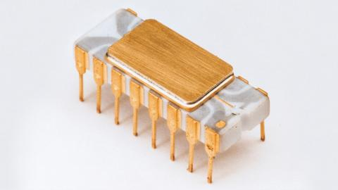
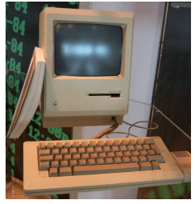
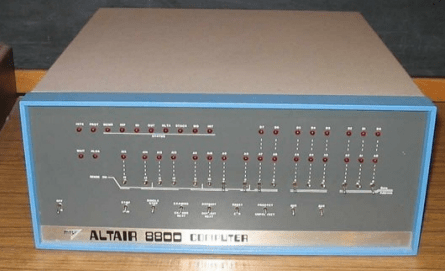
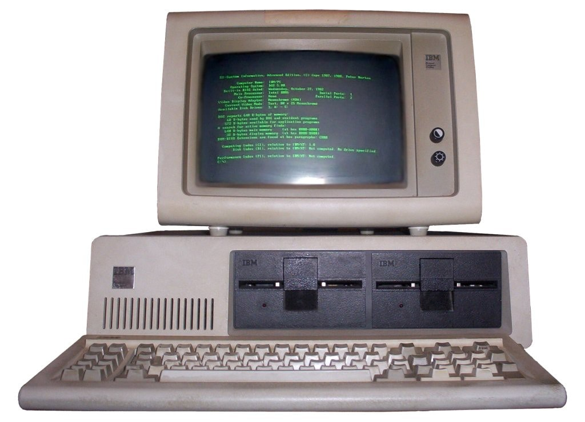

Década de 1970
Microprocessadores:
A década de 70 foi marcada com um grande avanço tecnológico, foi a época que começou a criação dos famigerados microcomputadores, tendo uma grande redução de tamanho nos computadores da época. Tudo começou em 1971 com o primeiro microprocessador comercialmente disponível, o Intel 4004 produzido pelo engenheiro Federico Faggin Juntamente de Ted Hoff e Stan Mazor
Microprocessador Intel 4004
Primeiro Computador Doméstico:
Em 1976 , é lançado o Apple 1 , pioneiro no mercado de computadores , o primeiro computador com placa única . A Apple lançou o computador de casa, o Apple 2 . O Apple II foi criado por Stephen Wozniak e Steve Jobs, que eram sócios . Vendo a grande aceitação obtida pelo Apple I junto, sobretudo, dos entusiastas da eletrônica, a Apple decidiu lançar um novo modelo, mais orientado para as massas, que pudesse ser utilizado por todos. Sua configuração externa era feita de revestimento plástico que o tornava mais estético para o mercado.
Apple I: Considerado o primeiro computador pessoal
Era equipado com um processador MOS Technology 6502 a 1 MHz, interface para cassetes áudio que permite gravar e carregar os programas, uma saída de vídeo composto que permitia a exibição de gráficos até 16 cores, placa de som de um canal, teclado (apenas para maiúsculas), oito slots de expansão internas, um interpretador de BASIC integrado na ROM de 12 KB e duas possibilidades diferentes para a memória RAM: o utilizador podia escolher entre um modelo com 4 KB ou um com 48 KB de memória, sendo que o primeiro permitia a expansão da memória em módulos de 4 ou 16 KB até ao máximo dos 48 KB.
Quarta Geração (1970) Até Hoje:
A quarta geração da computação foi marcada pela criação de microprocessadores e computadores pessoais, com a inovação dos microprocessadores, o computador não precisava ser grande e nem caro (mainframes). O processamento na época atingiam mais de bilhões de operações por segundo. Os circuitos acabaram se tornado ainda mais integrados e menores, o que permitiu o desenvolvimento dos microprocessadores. Quanto mais o tempo foi passando, mais fácil foi comprar um computador pessoal. Nesta era, os softwares e sistemas se tornaram tão importantes quanto o hardware.
Altair 8800:
O Altair (1975) revolucionou tudo o que era conhecido como computador até aquela época. Com um tamanho que cabia facilmente em uma mesa e um formato retangular, também era muito mais rápido que os computadores anteriores. O projeto usava o processador 8080 da Intel, fato que propiciou todo esse desempenho
Bil Gates a partir da utilização de um altair criou sua própria linguagem de programação o Altair Basics. O Altair funcionava através de cartões de entradas e saída, sem uma interface gráfica propriamente dita.
Apesar do sucesso do Altair, Steve Jobs percebeu que o computador não era fácil de ser utilizado por pessoas comuns, necessitava de uma interface gráfica, uma forma do usuário se comunicar com o computador facilmente (teclado e mouse). Por isso, Jobs, em 1976 criou o primeiro computador doméstico, o Apple I, a partir disso, Microsoft, e outras empresas de tecnologia replicaram ao seu modo essa nova tecnologia (possibilitar uma interface gráfica e interação com o usuário).
Microsoft e os processadores Intel Paralelamente a Apple, Bill Gates fundou a Microsoft, que também desenvolvia computadores principais. No começo de sua existência, no final dos anos 70 e até meados dos anos 80, Gates usou as ideias contidas nas outras máquinas para construir a suas próprias. Utilizando processadores 8086 da Intel, o primeiro sistema operacional da Microsoft, MS-DOS, estava muito aquém dos desenvolvidos por Steve Jobs. Por esse motivo, Bill Gates acabou criando uma parceria com Jobs, e após algum tempo, copiou toda a tecnologia gráfica do Macintosh para o seu novo sistema operacional, o Windows. Desta forma, em meados dos anos 80, o Macintosh e o Windows se tornaram fortes concorrentes.
Microsoft, MS-DOS(Primeiro sistema operacional da microsoft)